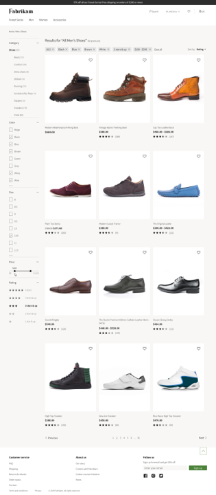
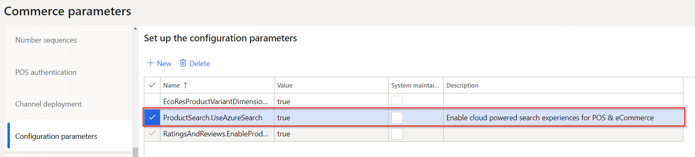

Übersicht über die Cloud-basierte Suche
Important
Dynamics 365 Retail ist jetzt Dynamics 365 Commerce und bietet umfassende Handelsfunktionen für alle Kanäle – von E-Commerce über Shops bis hin zu Callcentern. Weitere Informationen zu diesen Änderungen finden Sie unter Microsoft Dynamics 365 Commerce.
Dieses Thema enthält eine Übersicht der Cloud-betriebenen Suche in Microsoft Dynamics 365 Commerce.
Übersicht
Produkt-Auffindbarkeit hilft sicherzustellen, dass Debitoren Produkte über das Durchsuchen von Kategorien schnell und einfach finden. Einzelhändler erachten die Produkterfassung als ein primäres Tool für Debitoreninteraktionen über alle Kanäle hinweg.
Debitoren sind sich an die blitzschnellen Antwortzeiten von Internet-Suchmodulen, tollen E-Commerce-Websites, Sozialen Apps und automatischen Vorschlägen gewöhnt, die angezeigt werden, solange sie Suchbegriffen, facettierte Navigation und Hervorhebungen eingeben. Wenn Kunden das Produkt nicht schnell genug finden, das sie in einem E-Commerce-Shop suchen, zögern sie nicht und wechseln in einen anderen E-Commerce-Shop.
Die Cloud-betriebene Produkt-Auffindbarkeit in Dynamics 365 Commerce hilft Einzelhändler dabei, die Kundenbindung und Konversionsrate über alle Kanäle hinweg zu erhöhen, und zwar in E-Commerce-Kanälen und Verkaufsstellen-Kanälen (POS).
Die Dynamics 365 Commerce Suchenerfahrung hat verbesserte Funktionen, die Einzelhändler dabei unterstützen, eine bessere Produktauffindbarkeit zu erreichen. Gleichzeitig bieten diese Funktionen die Leistung und Skalierbarkeit, die für E-Commerce-Verkehr erforderlich sind.
Durchsuchen und suchen
Suchrelevanz und Leistung sind entscheidende Faktoren in der Omnikanal-Erfahrung, da Produktauffindbarkeit vorrangig ist für die Suchfunktion zur Informationsabrufung und Inhaltsnavigation. Ein effektives und effizientes Durchsuchen und Sucherlebnis hiflt, die Konversion zu erhöhen.
Die folgende Abbildung zeigt ein Beispiel für typisches Durchsuchen und für Suchfunktionen.

Facettierte Navigations- und Auswahlzusammenfassung
Facettierte Navigation hilft Kunden, Inhalt einfacher zu suchen, indem Filter zum Verfeinern der Suche gesetzt werden können, die mit Bedingungen oder einem Satz von Bedingungen verknüpft sind. Nachdem ein Kunde Verfeinerungskriterien ausgewählt und angewendet hat, wird eine Zusammenfassung der Auswahl angezeigt.
Wenn Sie facettierte Navigation verwenden, können Sie verschiedene Kriterien für verschiedene Bedingungen in einem Bedingungssatz konfigurieren, und müssen keine zusätzlichen Seiten erstellen.
Die folgende Abbildung zeigt ein Beispiel an, wo facettierte Navigation bei einer Suche verwendet wird.

Interaktive automatische Vorschläge
Aktuelle automatische Vorschlagsfunktionen zeigt die Schlüsselbegriffe an, die eine Suche für das passende Schlüsselwort auslösen. Aufgrund der neuen Erweiterungen in Dynamics 365 Commerce können Kunden oft Links zu Produkten sehen, bevor Sie die Eingabe abgeschlossen haben.
Dynamics 365 Commerce unterstützt auch Funktionen für Schlüsselwortabgleichungen in den unterschiedlichen Kategorien. Mit dieser Funktionalität können Kunden die Anzahl von entsprechenden Schlüsselwörtern in Kategorien sehen und eine Suche nach Schlüsselwort in anderen Kategorien starten.
Die folgende Abbildung zeigt ein Beispiel an, wo interaktives automatisches Vorschlagen verwendet wird.

Sortieren
Verbessertes Sortieren in Dynamics 365 Commerce ermöglicht Kunden, Suchergebnisse zu sortieren, suchen und durchsuchen und diese durch Kriterien wie Preis, Produktname und Produktnummer zu verfeinern. Debitoren können Ergebnisse auch sortieren, basierend darauf, ob ein Produkt neu ist, meistverkauft, oder vor kurzem hinzugefügt wurde.
Note
Diese Cloud-betriebenen Suchfunktionen sind ab Version 10.0.8 verfügbar. Stellen Sie sicher, dass unter Handelsparameter > Konfigurationsparameter ein Eintrag für „ProductSearch.UseAzureSearch set to 'true'“ vorhanden ist. 
Zusätzliche Ressourcen
Standard-Kategorie-Landingpage und Suchergebnisseite – Übersicht